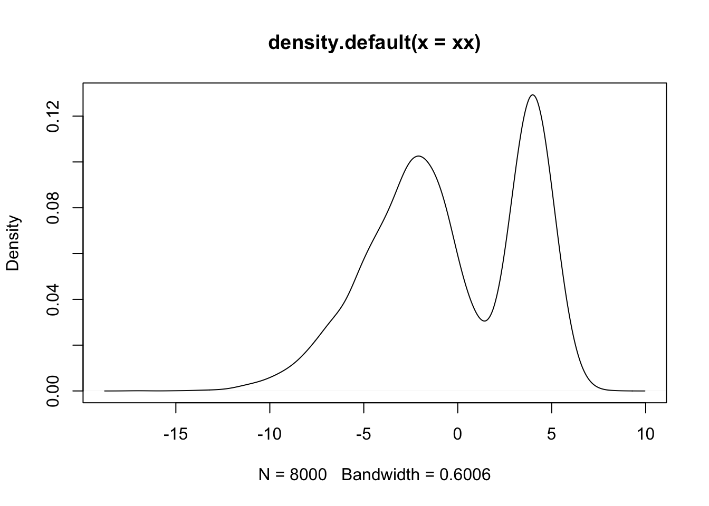
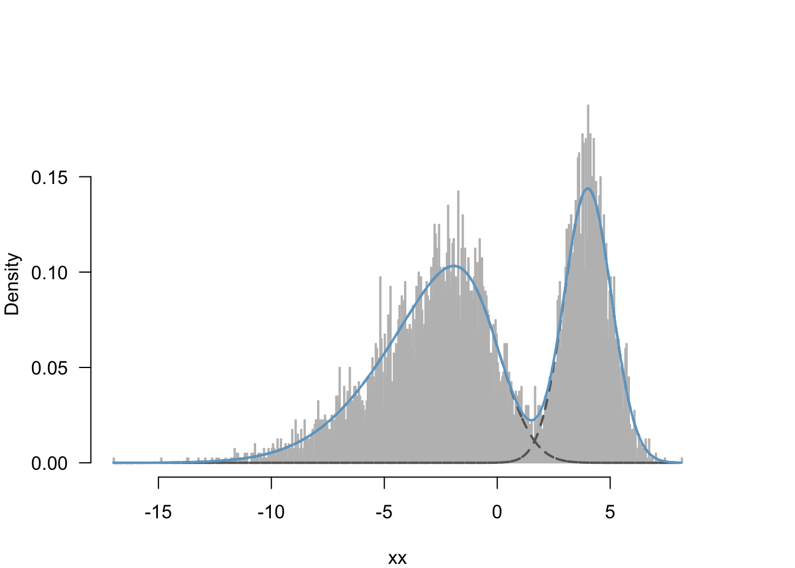

Last updated: 2020-02-25
Checks: 7 0
Knit directory: RcppComputingClub/
This reproducible R Markdown analysis was created with workflowr (version 1.6.0). The Checks tab describes the reproducibility checks that were applied when the results were created. The Past versions tab lists the development history.
Great! Since the R Markdown file has been committed to the Git repository, you know the exact version of the code that produced these results.
Great job! The global environment was empty. Objects defined in the global environment can affect the analysis in your R Markdown file in unknown ways. For reproduciblity it’s best to always run the code in an empty environment.
The command set.seed(20200224) was run prior to running the code in the R Markdown file. Setting a seed ensures that any results that rely on randomness, e.g. subsampling or permutations, are reproducible.
Great job! Recording the operating system, R version, and package versions is critical for reproducibility.
Nice! There were no cached chunks for this analysis, so you can be confident that you successfully produced the results during this run.
Great job! Using relative paths to the files within your workflowr project makes it easier to run your code on other machines.
Great! You are using Git for version control. Tracking code development and connecting the code version to the results is critical for reproducibility. The version displayed above was the version of the Git repository at the time these results were generated.
Note that you need to be careful to ensure that all relevant files for the analysis have been committed to Git prior to generating the results (you can use wflow_publish or wflow_git_commit). workflowr only checks the R Markdown file, but you know if there are other scripts or data files that it depends on. Below is the status of the Git repository when the results were generated:
Unstaged changes:
Modified: analysis/index.Rmd
Note that any generated files, e.g. HTML, png, CSS, etc., are not included in this status report because it is ok for generated content to have uncommitted changes.
These are the previous versions of the R Markdown and HTML files. If you’ve configured a remote Git repository (see ?wflow_git_remote), click on the hyperlinks in the table below to view them.
| File | Version | Author | Date | Message |
|---|---|---|---|---|
| Rmd | 3bb9b3a | scristia | 2020-02-25 | wflow_publish(files = “sn_mix.Rmd”) |
| html | 303d980 | scristia | 2020-02-25 | Build site. |
| Rmd | 560db78 | scristia | 2020-02-25 | wflow_git_commit(all = TRUE, files = c(“index.Rmd”, “intro.Rmd”, |
Normal mixture models are a popular method of distribution based clustering. Despite this, in practice they often don’t work well as slight departures from normality lead to poor model fit. One way to remedy this is to use a more robust distribution for clustering, such as adding additional parameters for kurtosis (i.e. t-distribution) or skewness.
A finite dimensional mixture of skew-normal distributions assumes data \(y = (y_1, \ldots, y_n) \in R^n\) are a sample from a probability density function of the form \[ f_{SN}(y; \xi, \omega^2, \alpha) = \frac{2}{\omega} \phi\left( \frac{y - \xi}{\omega}\right) \Phi(\alpha \omega^{-1}(y - \xi)) \] where \(\alpha\) is a skewness parameter.
Full conditionals are available for the proper parameter transformations and Gibbs sampling is still feasible. See ‘Bayesian inference for finite mixtures of univariate and multivariate skew-normal and skew-t distributions.’ by Früwirth-Schnatter, Pyne (2010) for derivations and greater detail.
See github.com/scristia/SkewNormalMix for an implementation of this model.
# Load packages
library(tidyverse)
library(devtools)
#install_github("scristia/SkewNormalMix")
load_all("~/Software/SkewNormalMix")
library(sn)
library(mvtnorm)
library(msm)
library(MASS)
library(gtools)
library(truncnorm)# simulated data
omega <- c(4, 1)
omega2 <- omega^2
alpha <- c(-3, 0)
mu <- c(0, 4)
xx <- c(rsn(5000, mu[1], omega[1], alpha[1]), rsn(8000, mu[2], omega[2], alpha[2]))
xx <- xx[sample.int(8000)]
par(bg="white")
plot(density(xx), type="l")
| Version | Author | Date |
|---|---|---|
| 303d980 | scristia | 2020-02-25 |
n <- length(xx)
##transformations
delta <- alpha/sqrt(1+alpha^2)
Ey <- mu+omega2*delta*sqrt(2/3.1415)
psi <- omega*delta
sigma2 <- omega2*(1-delta^2)
K = 2
# nsim=10000
nsim=2000
burnin <- 1:500R implementation of function:
set.seed(4321)
res = skewnormal.gibbs(xx, K=K, nsim=nsim)
mus <- colMeans(res$MU[-burnin, ])
omegas <- colMeans(res$OMEGA[-burnin, ])
alphas <- colMeans(res$ALPHA[-burnin, ])
etas <- colMeans(res$ETA[-burnin, ])Rcpp implementation of function:
set.seed(4321)
res2 <- skewNormalCpp(r=xx, K=K, nsim=nsim)
mus2 <- colMeans(res2$MU[-burnin, ])
omegas2 <- colMeans(res2$OMEGA[-burnin, ])
alphas2 <- colMeans(res2$ALPHA[-burnin, ])
etas2 <- colMeans(res2$ETA[-burnin, ])Check posterior fit:

| Version | Author | Date |
|---|---|---|
| 303d980 | scristia | 2020-02-25 |
Check truth:
| Parameter | Truth | Estimate (R) | Estimate (Rcpp) |
|---|---|---|---|
| mu1 | 0.000 | -0.05 | -0.05 |
| mu2 | 4.000 | 4.07 | 3.93 |
| omega1 | 4.000 | 3.96 | 3.96 |
| omega2 | 1.000 | 1.05 | 1.05 |
| alpha1 | -3.000 | -2.98 | -2.98 |
| alpha2 | 0.000 | -0.10 | 0.09 |
| eta1 | 0.615 | 0.62 | 0.62 |
| eta2 | 0.385 | 0.38 | 0.38 |
| te | st r | eplications e | lapsed r | elative u | ser.self s | ys.self u | ser.child s | ys.child |
|---|---|---|---|---|---|---|---|---|
| 2 | skewnormal.gibbs(xx, K = 2, nsim = 200, thin = 1) | 3 | 10.372 | 6.174 | 9.410 | 0.927 | 0 | 0 |
| 1 | skewNormalCpp(r = xx, K = 2, nsim = 200) | 3 | 1.680 | 1.000 | 1.501 | 0.178 | 0 | 0 |
R version 3.5.2 (2018-12-20)
Platform: x86_64-apple-darwin15.6.0 (64-bit)
Running under: macOS Mojave 10.14.5
Matrix products: default
BLAS: /Library/Frameworks/R.framework/Versions/3.5/Resources/lib/libRblas.0.dylib
LAPACK: /Library/Frameworks/R.framework/Versions/3.5/Resources/lib/libRlapack.dylib
locale:
[1] en_US.UTF-8/en_US.UTF-8/en_US.UTF-8/C/en_US.UTF-8/en_US.UTF-8
attached base packages:
[1] stats4 stats graphics grDevices utils datasets methods
[8] base
other attached packages:
[1] rbenchmark_1.0.0 truncnorm_1.0-8
[3] gtools_3.8.1 MASS_7.3-51.4
[5] msm_1.6.8 mvtnorm_1.0-11
[7] sn_1.5-5 SkewNormalMix_1.0
[9] RcppArmadillo_0.9.850.1.0 Rcpp_1.0.3
[11] devtools_2.2.1 usethis_1.5.1
[13] forcats_0.4.0 stringr_1.4.0
[15] dplyr_0.8.3 purrr_0.3.2
[17] readr_1.3.1 tidyr_1.0.0
[19] tibble_2.1.3 ggplot2_3.2.1
[21] tidyverse_1.2.1 nvimcom_0.9-81
loaded via a namespace (and not attached):
[1] nlme_3.1-141 fs_1.3.1 lubridate_1.7.4
[4] httr_1.4.1 rprojroot_1.3-2 numDeriv_2016.8-1.1
[7] tools_3.5.2 backports_1.1.5 R6_2.4.0
[10] lazyeval_0.2.2 colorspace_1.4-1 withr_2.1.2
[13] tidyselect_0.2.5 prettyunits_1.0.2 mnormt_1.5-6
[16] processx_3.4.1 compiler_3.5.2 git2r_0.26.1
[19] cli_1.1.0 rvest_0.3.4 expm_0.999-4
[22] xml2_1.2.2 desc_1.2.0 scales_1.0.0
[25] callr_3.3.2 digest_0.6.21 rmarkdown_1.16
[28] pkgconfig_2.0.3 htmltools_0.4.0 sessioninfo_1.1.1
[31] highr_0.8 rlang_0.4.0 readxl_1.3.1
[34] rstudioapi_0.10 generics_0.0.2 jsonlite_1.6
[37] magrittr_1.5 Matrix_1.2-17 munsell_0.5.0
[40] lifecycle_0.1.0 stringi_1.4.3 whisker_0.4
[43] yaml_2.2.0 pkgbuild_1.0.6 grid_3.5.2
[46] promises_1.1.0 crayon_1.3.4 lattice_0.20-38
[49] haven_2.1.1 splines_3.5.2 hms_0.5.1
[52] zeallot_0.1.0 knitr_1.25 ps_1.3.0
[55] pillar_1.4.2 pkgload_1.0.2 glue_1.3.1
[58] evaluate_0.14 remotes_2.1.0 modelr_0.1.5
[61] vctrs_0.2.0 httpuv_1.5.2 testthat_2.2.1
[64] cellranger_1.1.0 gtable_0.3.0 assertthat_0.2.1
[67] xfun_0.10 broom_0.5.2 later_1.0.0
[70] survival_2.44-1.1 memoise_1.1.0 workflowr_1.6.0
[73] ellipsis_0.3.0